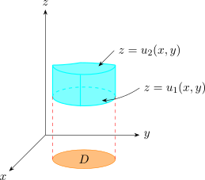
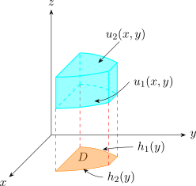
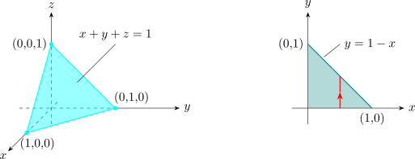
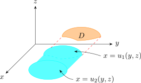
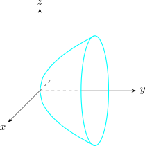
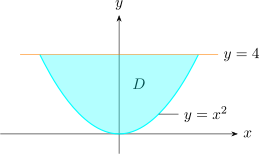
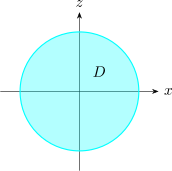

3.9 Triple Integrals Over A General Bounded Region \(E\)
To integrate over a general bounded solid \(E\), enclose \(E\) in a box \(B\) and define \(F\) to agree with \(f\) on \(E\) and to be \(0\) at the points of \(B\) outside \(E\). Then \[\iiint \limits _E f(x,y,z)\, dV = \iiint \limits _B F(x,y,z)\,dV .\]
A solid region \(E\) is of type 1 if it lies between the graphs of two continuous functions of \(x\) and \(y\), \[E = \{ (x,y,z) \mid (x,y) \in D,\ u_1(x,y) \leq z \leq u_2(x,y)\},\] where \(D\) is the projection of \(E\) on the \(xy\)-plane.

Type 1 Solids
For a type 1 solid, Fubini’s theorem gives \[\iiint \limits _E f(x,y,z)\,dV = \iint \limits _D \left [ \int ^{u_2(x,y)}_{u_1(x,y)} f(x,y,z)\,dz\right ] dA .\] If moreover the projection \(D\) is a type I plane region, \[E = \{(x,y,z) \mid a\leq x \leq b,\ g_1(x)\leq y\leq g_2(x),\ u_1(x,y)\leq z\leq u_2(x,y)\},\] then \[\iiint \limits _E f(x,y,z)\,dV = \int ^b_a \int ^{g_2(x)}_{g_1(x)} \int ^{u_2(x,y)}_{u_1(x,y)} f(x,y,z)\,dz\,dy\,dx .\]

If instead \(D\) is a type II plane region, \[E = \{(x,y,z) \mid c\leq y \leq d,\ h_1(y)\leq x \leq h_2(y),\ u_1(x,y) \leq z \leq u_2(x,y) \},\] then \[\iiint \limits _E f(x,y,z)\,dV = \int ^d_c \int ^{h_2(y)}_{h_1(y)} \int ^{u_2(x,y)}_{u_1(x,y)} f(x,y,z)\,dz\,dx\,dy .\]
Example 3.9.1. Evaluate \(\iiint _E z \, dV\), where \(E\) is the tetrahedron bounded by the planes \(x = 0\), \(y = 0\), \(z = 0\) and \(x + y + z = 1\).

Solution. The lower boundary is \(z = 0\) and the upper the plane \(z = 1 - x - y\), over the triangle \(D\) in the \(xy\)-plane bounded by the axes and the line \(y = 1 - x\). So \begin {align*} \iiint \limits _E z\,dV & = \int ^1_0 \int _0^{1-x}\int ^{1-x-y}_0 z \,dz \,dy\, dx = \frac {1}{2} \int ^1_0 \int _0^{1-x}(1 - x- y)^2 \,dy \,dx\\ & = \frac 16\int _0^1(1 - x)^3\,dx = \frac {1}{24} . \end {align*}
The other two coordinate directions give two more types. A solid \(E\) is of type 2 if \[E = \{ (x,y,z) \mid (y,z)\in D,\ u_1(y,z) \leq x \leq u_2(y,z)\},\] where \(D\) is the projection of \(E\) on the \(yz\)-plane, bounded in front and behind by the surfaces \(x = u_1(y,z)\) and \(x = u_2(y,z)\).

Then \[\iiint \limits _E f(x,y,z)\,dV = \iint \limits _D \left [ \int ^{u_2(y,z)}_{u_1(y,z)} f(x,y,z)\,dx\right ] dA .\] A solid \(E\) is of type 3 if \[E = \{ (x,y,z) \mid (x,z)\in D,\ u_1(x,z) \leq y \leq u_2(x,z)\},\] with \(D\) the projection on the \(xz\)-plane, and then \[\iiint \limits _E f(x,y,z)\,dV = \iint \limits _D \left [ \int ^{u_2(x,z)}_{u_1(x,z)} f(x,y,z)\,dy\right ] dA .\]
Example 3.9.2. Evaluate \(\iiint _E \sqrt {x^2 + z^2}\,dV\), where \(E\) is the region bounded by the paraboloid \(y = x^2 + z^2\) and the plane \(y = 4\).
|  |  | ||||
Solution. As a type 1 solid, the paraboloid gives \(z = \pm \sqrt {y - x^2}\), and the projection on the \(xy\)-plane is the region between \(y = x^2\) and \(y = 4\), so \[E = \{ (x,y,z) \mid -2\leq x \leq 2,\ x^2 \leq y \leq 4,\ -\sqrt {y - x^2} \leq z \leq \sqrt {y - x^2}\}\] and \[\iiint \limits _E \sqrt {x^2 + z^2}\,dV = \int ^2_{-2}\int ^4_{x^2}\int ^{\sqrt {y - x^2}}_{-\sqrt {y - x^2}}\sqrt {x^2 + z^2}\,dz\,dy\,dx ,\] which is correct but hard to evaluate. Regard \(E\) instead as a type 3 solid. Its projection on the \(xz\)-plane is the disc \(D_3\): \(x^2 + z^2\leq 4\).

For each \((x,z)\) in \(D_3\), \(y\) runs from \(x^2 + z^2\) to \(4\), so \[\iiint \limits _E \sqrt {x^2 + z^2}\,dV = \iint \limits _{D_3} \left [ \int ^4_{x^2 + z^2}\sqrt {x^2 + z^2}\, dy\right ]dA = \iint \limits _{D_3}\left ( 4 -(x^2 + z^2)\right ) \sqrt {x^2 + z^2}\,dA .\] In polar coordinates in the \(xz\)-plane, \(x = r \cos \theta \), \(z = r\sin \theta \), \[\int ^{2\pi }_0 \int ^2_0 (4-r^2)\,r\,r\,dr\,d\theta = 2\pi \int ^2_0 (4r^2 - r^4)\, dr = 2\pi \left [\frac {4r^3}{3}-\frac {r^5}{5}\right ]^2_0 = \frac {128\pi }{15} .\]
Example 3.9.3. Find the volume of the solid bounded by the cylinder \(y^2 + z^2 = 4\) and the planes \(x = 0\) and \(x + y = 3\).
Solution. The solid is of type 2: for \((y,z)\) in the disc \(y^2 + z^2\leq 4\), \(x\) runs from \(0\) to \(3 - y\), which is positive since \(y\leq 2\). So \[V = \iint \limits _{y^2+z^2\leq 4}(3 - y)\,dA = 3(4\pi ) - \iint y\,dA = 12\pi ,\] the integral of \(y\) over the disc vanishing by symmetry.
Questions on this section
Stuck on something here? Ask below and it stays attached to this topic.